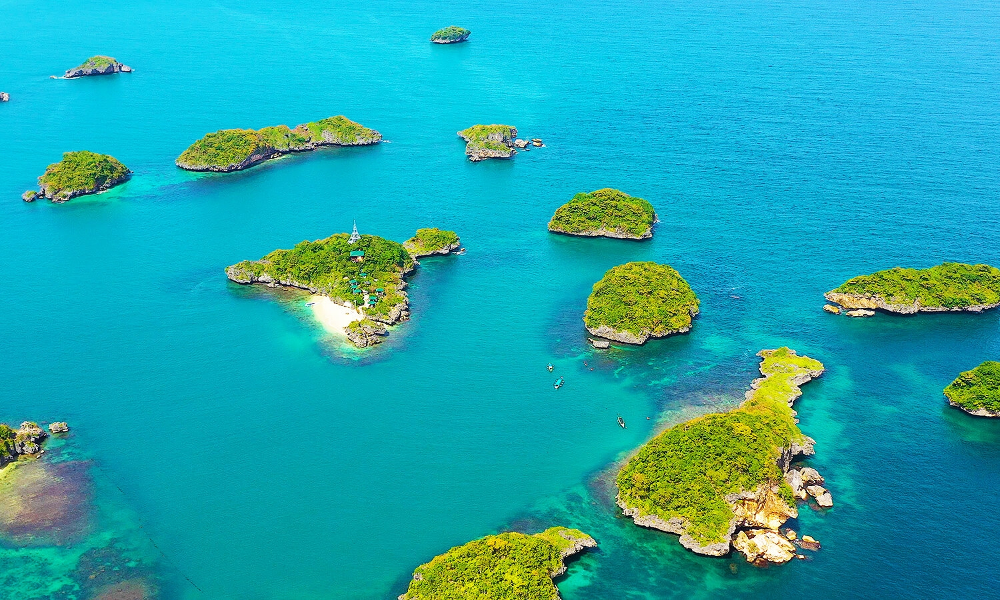
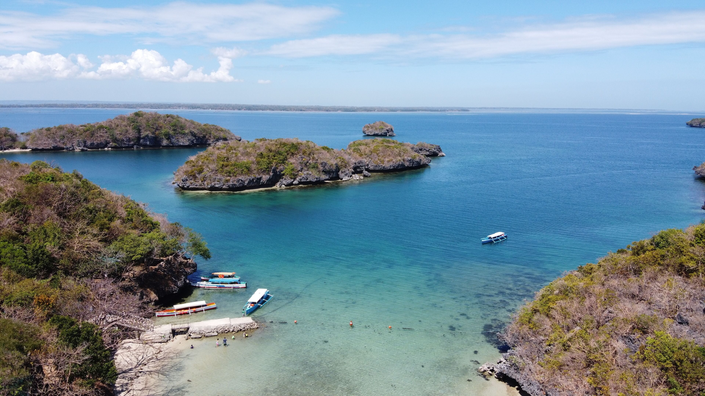
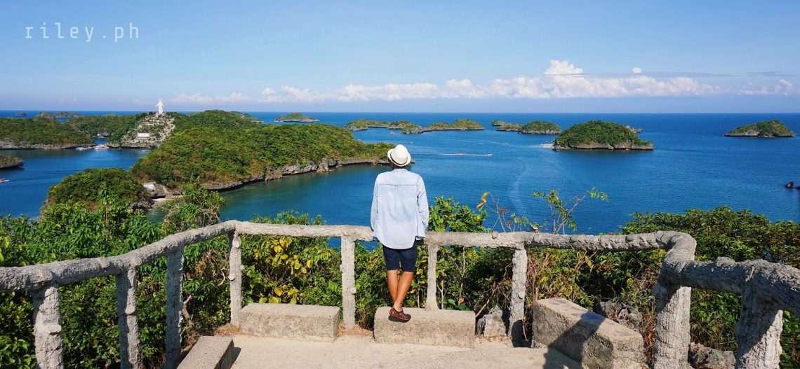

The Alaminos City View Deck is a scenic overlook located in Alaminos, Pangasinan, Philippines. It provides panoramic views of the city and surrounding coastal landscapes, including glimpses of the famous Hundred Islands National Park. The deck serves as both a leisure spot for locals and a tourism landmark celebrating the city’s natural beauty.
Fun Facts
- You can sometimes spot several of the Hundred Islands from here on a clear day.
- It’s a favorite stop for sunrise and sunset photos.
- The area has become popular for quick scenic breaks for travelers.
Setting and Design

The view deck sits atop a gently elevated area outside the city center, designed with railings and open spaces for safe viewing. It is often landscaped with tropical greenery and occasionally features local architectural motifs. The design encourages visitors to linger while taking in sweeping views of the Lingayen Gulf and the urban core below.
Tourist Amenities

As a relatively new addition to Alaminos’ tourist infrastructure, the view deck complements visits to the nearby Hundred Islands National Park. It provides visitors a vantage point to appreciate the coastal terrain and serves as an alternative stop for those exploring inland attractions. The site also supports local tourism by drawing both day-trippers and photography enthusiasts.
Visitor Experience

The location is especially popular during sunrise and sunset, when lighting enhances the panoramic scenery. Visitors commonly use the site as a backdrop for social media photos and family outings. Amenities such as parking areas, benches, and food stalls are occasionally available, depending on local management and seasonal activity levels.
There’s a local belief that if you visit at sunrise and make a quiet wish while overlooking the islands, the calmness of the sea will “carry” your wish outward. It’s a peaceful ritual many travelers try—whether they believe it or not.